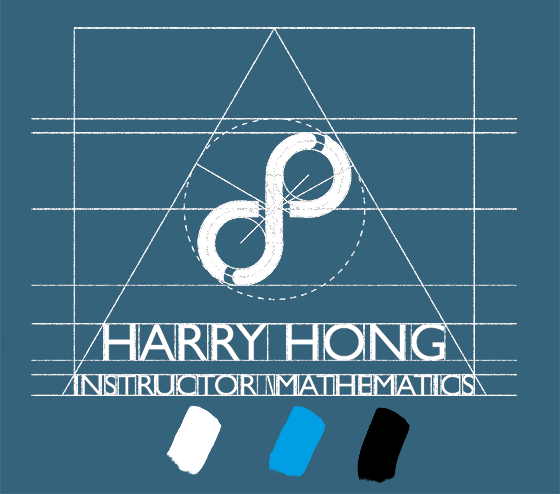
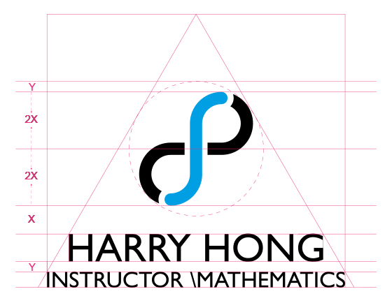
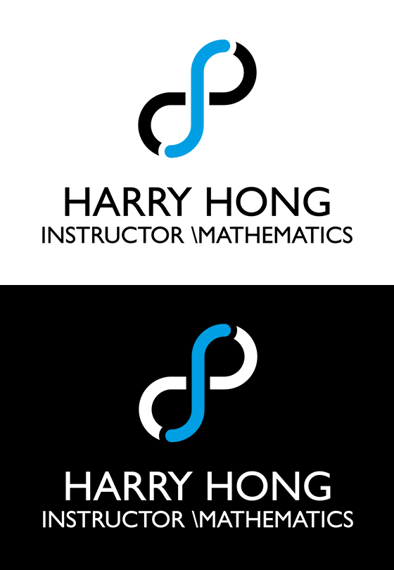
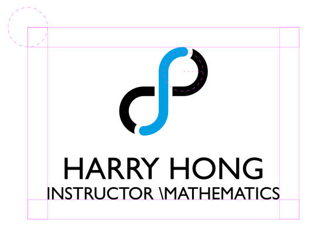
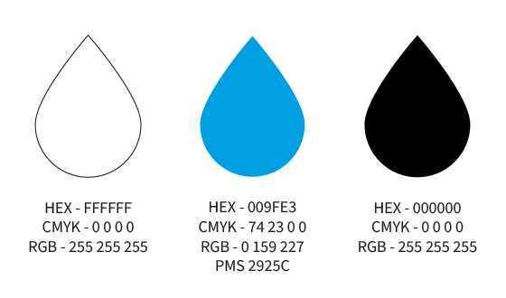
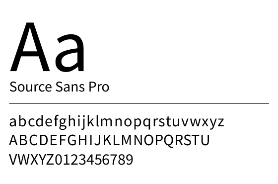
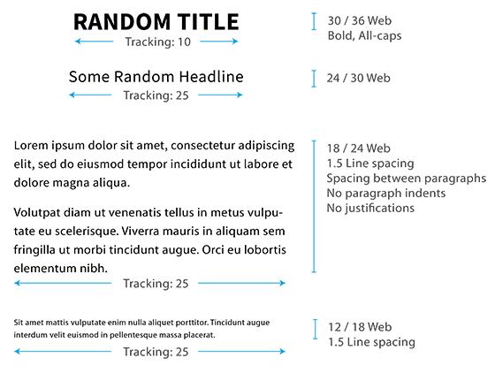

Philosophy

Over the past couple of years, I've come to recognize that the online communication is the nature of the future and started realigning my fundamentals. As I'm assuming responsibility for the protection from this rapidly changing climate, I decided to build the identity from the scratch that'll not only reinforce my existing reputation but also reconstruct my new main target: more communication; this new Identity is both inward- and outward-facing.
The new Standards have two main goals to achieve:
To give strong, consistent, and attentive feeling. It is vital to convey these feeling in order to give clients more reassurance and warmth.

To focus more on the new means of communication: digital. I believe face-to-face or verbal communication is the best but it may be unrealistic at times. The digital form of communication, especially emails, is now the most preferred method of communication, according to a SendGrind study called The Future of Digital Communication. Under these new Standards, I decided to discard all existing print-based formats such as PDFs, and design new digital formats that can be readily accessible in screen devices, especially emphasizing on viewing experience from mobile phone screens.
Logo

The construction and composition of the logo is based on a combination of two geometric shapes: a circle and an equilateral triangle. An integral sign, symbolizing limitless, is inscribed in the lemniscate, symbolizing infinity, which is inscribed in a circle, symbolizing perfection, which is inscribed in an equilateral triangle, symbolizing unity and success. The triangle and its incircle are not parts of the final image but the construction and its white space yield an upward movement and stable formation.

An alternate logo with different color combination with reversed black and white is available to use on dark background only.

The imaginary rectangle that circumscribes the logo is to be surrounded at minimum distance equal to the radius of one of the circles that compose the lemniscate. No visual elements are allowed within this range.
The minimum onscreen size of the logo is 150 pixels wide. The minimum print size is to be determined.
Color

The three colors that are primarily used in the Standards are pure white, blue, and pure black. The shade of the blue is chosen to give viewers a sense of trustworthiness and stability. Its Pantone color is estimated. The tinted variations of the colors may be used for better legibility. Some other saturated colors may be used only as secondary accent colors.
In most types of documents and forms, pure black text on pure white background is to be used. However, when "dark mode" is turned on the device, slightly darker white text (opacity of 87%, 60%, 38% for high emphasis, medium emphasis, disabled, respectively) on dark grey background (HEX #212121) is to be used if possible. Otherwise, all text/background color combinations are to be chosen according to the Web Content Accessibility Guidelines (WCAG 2.0) level AA, requiring a 4.5:1 color contrast between text and background for normal text, and 3:1 for large text.
*PMS is a registered trademark of Pantone®, Inc. The color shown on this page is not intended to match the Pantone Color Standards. For accurate standards, refer to the current edition of the Pantone Color Specifier Guide.
Typography

The Standards primarily use the Source Sans Pro family in digital publications whenever possible. It is highly readable and approachable. At large sizes, in bold weight, it commands attention and interest. As body copy, it remains legible and user-friendly.

Where it's applicable, paragraph styles are set as above. Other typographic details such as kerning or word spacing, and font sizes in prints are to be determined.
Where web fonts are not available such as most email clients, Arial, the most widely accepted typeface family, may substitute.
Contact
Should you have any questions or comments regarding the Standards, do not hesitate to contact:
harryhong.math@gmail.com
+1 714 872 3978